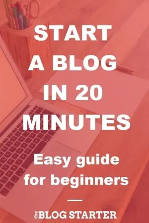

How to Start A Blog in 2025
Create a Blog in 20 Minutes
Are you looking for an easy guide on how to start a blog? The step-by-step guide on this page will show you how to create a blog in 20 minutes with just the most basic computer skills. Ready to start? Click here to skip to Step #1 of the free guide and start building your blog now! After completing this guide you will have a beautiful blog that is ready to share with the world. This guide is made especially for beginners. I will walk you through each and every step, using plenty of pictures and videos to make it all perfectly clear. If you get stuck or have questions at any point, simply send me a message and I will do my best to help you out. How to start a blog for beginners My name is Scott Chow, and I am going to show you how to start blogging today. I have been building blogs and websites since 2002. In that time I have launched several of my own blogs, and helped hundreds of others do the same. I know that starting a blog can seem overwhelming and intimidating. This free guide is all about blogging for beginners, and will teach you how to become a blogger with just the most basic computer skills. So whether you’re 8 or 88, you can create your own blog in 20 minutes. I am not ashamed to admit that when I was first learning how to build a blog I made a ton of mistakes. You can benefit from more than a decade of my experience so that you don’t repeat these same mistakes when you make your own blog. I created this free guide so that a complete beginner can learn how to blog quickly and easily. So, just how do you start a blog? Learn how to create a blog in about 20 minutes following these steps: How to Start a Blog in 6 Steps Pick a blog name. Choose a descriptive name for your blog. Get your blog online. Register your blog and get hosting. Customize your blog. Choose a free blog design template and tweak it. Write & publish your first post. Share your thoughts with the world. The fun part! Promote your blog. Get more people to read your blog with the proper marketing. Make money blogging. Choose from several options to monetize your blog. Should you start a blog? One of the misconceptions about starting a blog is that you need to be a great writer to be successful. Nothing could be further from the truth. People read blog sites to get a personal perspective on things, so most bloggers write in a very informal and conversational style. And because of the format, many successful bloggers will write about a variety of topics on the same blog. In addition, you don’t need to be an expert on any of the topics you write about to have a successful blog. For example, visitors to a cooking blog don’t want to read a textbook from a food scientist, they want to hear the experiences of someone who has actually cooked some real meals, mistakes and all. To be successful as a blogger there is really just one requirement: a passion for your topic. At its heart, blogging is about sharing your knowledge with the world. Writing about things that you are passionate about makes the process of starting a successful blog so much easier. As long as you are writing about things that you are genuinely interested in, your passion will shine through and keep your visitors interested. So why would you go to the trouble of blogging? There are a few reasons: Share your story. A blog allows you to have a voice and be heard. You can share your story with the entire world if you so choose. One of the most common ways blogs are used are as a diary where the blogger writes about their daily experiences so that friends, family, and others can all be a part of their lives. Make money from home. Blogging can be quite lucrative if done correctly. The top bloggers in the world obviously earn quite a bit, but even a part-time blogger can expect to make a nice profit if things are done correctly. The best part about it is that blogging is a form of passive income, since you can spend just a few hours a week writing a piece of content and then continue to profit from it long after the the writing is finished. I go into much more detail on how to blog for money later in this guide. Recognition for yourself or your business. No, you probably won’t have paparazzi following you around because of your latest post. But a successful blog makes your idea into a reality, and can gain you a ton of recognition in your respective field. Many bloggers are known as experts just because of their blogs, and some have even gotten book and movie deals based on their blogs. Find a community. Blogging at its heart is interactive. You write a post and people comment on it. This is a good way to connect with people who are interested in the same things as you are. Blogging allows you to teach these people based on your experience, and it gives you the opportunity to learn from your readers as well. Ready to begin? Click here to go to Step #1 of the guide What is a blog anyway? In short, a blog is a type of website that focuses mainly on written content, also known as blog posts. In popular culture we most often hear about news blogs or celebrity blog sites, but as you’ll see in this guide, you can start a successful blog on just about any topic imaginable. Bloggers often write from a personal perspective that allows them to connect directly with their readers. In addition, most blogs also have a “comments” section where visitors can correspond with the blogger. Interacting with your visitors in the comments section helps to further the connection between the blogger and the reader. This direct connection to the reader is one of the main benefits of starting a blog. This connection allows you to interact and share ideas with other like-minded people. It also allows you to build trust with your readers. Having the trust and loyalty of your readers also opens up the door to making money from your blog, which is something I discuss later in this guide. The good news is that the internet is exploding with growth right now. More people than ever are online. This explosion in growth means more potential readers for your blog. In short, if you are thinking about starting a blog then there is no better time than right now. Let’s start your blog! Step 1: Pick a blog name The first step is the choose a domain name for your blog. A domain name is the web address for your blog, such as MyNewBlog.com If you already have a domain name in mind for your blog, then you can use the domain checker tool below to make sure that no one else has already registered that name. If you are not sure what to name your blog, or what topic to blog about, skip to the next section for helpful tips on how to choose a blog name. See if your blog name is available: Enter blog name & extension here... If your preferred domain name is available, then you can jump ahead to Step #2 to register your domain name If you find that the name you wanted is already taken there are a few things you can do: Try a different domain extension. If the .com version is already registered you may still be able to get the .net or .org version of the name. Add small words. Words like “a”, “my”, “best”, or “the”. For example, this site is called TheBlogStarter.com instead of BlogStarter.com. Add dashes between words. For example, scott-chow.com Note: You cannot use any spaces or punctuation, other than dashes, in a domain name. Capitalization is ignored. How to Choose a Blog Topic & Name If you don’t have an idea for a name already, the first step is choosing your blog topic. If you’re not sure what to blog about, there are a few ways to find a good blog topic:  Life experiences. Everyone has lessons they have learned through life experience. Sharing this knowledge can be incredibly helpful to others in similar situations. For example, I recently helped a woman start her blog about being a fireman’s wife. She has a lot of experience and knowledge to share with others about this topic, and it has helped her connect with others in similar situations. Think about the things you have experienced in life. This could be related to your family (example: a blog about being a stay at home mom), work (a blog about experiences dealing with clients), or other life experiences (a blog about dealing with a troubling time such as a disease or divorce, or about a happy time such as preparing for a wedding or a birth of a child). A personal blog. A personal blog is a blog all about you. This will include a variety of topics, from things you do on a daily basis, to random thoughts and musings. This is a great way to share your thoughts with the world without having to stick to just one topic. Hobbies & passions. Hobbies or other interests you are passionate about are a great place to start. Cooking, travel, fashion, sports, and cars are all classic examples. But even blogs about hobbies with smaller audiences can be successful, as you are able to tap into a global audience with your blog. Once you have a topic it’s time to choose your blog name, also known as your domain name. A good blog name should be descriptive so that potential visitors can instantly tell what your blog is about just from the name. If you are blogging about one specific topic then you will definitely want to include that in some way when you pick a domain name. Try not to get hung-up on just one word though. For example, a cooking blog doesn’t necessarily have to have the word “cooking” in it. The words “food”, “recipes”, and “meals” would also let people know that your blog is about cooking. If you are planning to create a personal blog where you discuss a variety of topics then I recommend using your name, or some variation of it, since your blog is all about you. For example, I own the blog scottchow.com. You can also add your middle name or middle initial if you find your name is already taken. Or you could use a variation like “Scott Chow Blog” or “Blogging with Scott”. Can’t decide on a good name for your blog? Contact me and I will help you personally (for free)! Once you have some name ideas you will need to choose a domain extension. A .com domain extension is the most preferred, but .net, .org, .co, or other extension work just as well. It is also important to note that for the purposes of a blog domain you cannot have any spaces between words. So “Blogging with Scott” becomes bloggingwithscott.com Step 2: Get your blog online Simple steps to help you create a blog easily Now that you’ve got a name picked out it’s time to get your blog online. This might sound hard or technical, so let’s go step-by-step to make the process easy. To get your blog up and running you need three things: Domain registration To claim your domain name and use it for your blog you first need to register it. Blog hosting A blog host is a company that stores all of the files for your blog and delivers them to the visitor when they type in your blog name. You must have blog hosting in order to have a blog. Blogging software You also need to have the software to build your blog. In this guide I will show you how to build a blog using the WordPress blogging software, because it is the most popular, customizable, and easiest to use. The good news is that these all come packaged together from the blog host I recommend, and the one I show you how to use in this guide: BlueHost. I personally use BlueHost and I recommend them for all new bloggers because: They will register your custom domain name for free, making sure no one else can take it. They offer an automatic free installation of the WordPress blogging software (which I show you how to use in this guide). They offer reliable web hosting that has been recommended by WordPress since 2005 and they currently host over 2 million blogs and websites. They have helpful 24/7 customer service via phone or web chat. They have a 30 day money back guarantee if you are unsatisfied for any reason. You can use any BlueHost link on this site by July 20th to get the special Summer Sale price of $1.99 per month. Disclosure: BlueHost compensates The Blog Starter when you purchase through this link, which means my services are free of charge to you! In fact, if you have any trouble at all setting up a blog with this tutorial, just contact me and I will do it for you (free!). Let’s start your blog! 1. Click here by July 20th to get the special Summer Sale price of $1.99 per month on BlueHost before it expires and then click “get started now”. Web hosting special discount 2. Select your plan. I recommend that beginning bloggers get the Basic plan. Click “Select” to choose your plan. All of the BlueHost plans have everything you need to get your blog up and running, including a free custom domain name, easy WordPress installation, web hosting, and custom email addresses (yourname@yourdomain.com). pick a hosting plan from Bluehost 3. Type in your domain name in the box and then click “Search for Domain” to start the registration process. When you register a domain name your contact information gets put into a database of domain name owners. If you would rather keep your information private, be sure to check the box at the top right that says “Add Private Registration”. If you already own a domain name and want to use it for your blog, check the box at the top left choose a domain name 4. Now you will also choose your hosting package options. The discounted price is automatically applied when you click any BlueHost link on this page. I recommend deleting the “Professional Email” free trial. You will still be able to create custom email addresses (yourname@yourblog.com) without this feature. Choosing your settings and package 5. Fill out your billing details and create your account password on the registration page. Create an account 6. Login to the WordPress administrator dashboard Once you complete the checkout you will be automatically logged-in to your BlueHost account. You will then need to login to WordPress. Click “Edit site” to be taken to the WordPress administrator dashboard. Login to WordPress blog from Bluehost dashboard On the following screen click “I’m following a tutorial, take me to the WP Admin Dashboard” to be logged-in. Jump straight to WordPress admin dashboard Having trouble installing your blog? Get help here. Step 3: Customize your blog How do I start a blog? You can watch me build and customize a beautiful blog from scratch here: The video above should answer a lot of questions you might have about how to set up a blog and get it customized. Here is a step-by-step break-down of some of things I show in the video. Logging in If you are not already logged-in from the previous step, go to Bluehost.com and click “Login” on the top right to bring up the login screen. You can then login using your domain name and the password you set in the previous step. If you have misplaced your password you can reset it by clicking the “Forgot Password” link. Login to your account and get started building your blog Once you log-in you will be taken to your BlueHost Portal. From the portal you can click the blue “WordPress” button to be logged-in automatically to your WordPress blog. Changing your blog design Once you login you will be in the WordPress dashboard. This is where you can make any changes you want to your blog. Everyone has a different idea of how they want their blog to look. One of the great things about WordPress is that you can change your entire layout and design with just a few clicks. In WordPress, blog layouts are known as “Themes”. What is a blog theme? Themes control the entire design of your WordPress blog. To change your theme you are going to click on the “Appearance” tab on the left menu. How to choose a theme You will see several free WordPress themes are already installed on your blog: Twenty Twenty-Four, Twenty Twenty-Five, etc. These are well-designed, clean-looking themes that can work for just about any type of blog. In fact, many of the world’s top bloggers use one of these themes. Unless you have a very specific design in mind for your blog, I suggest you use one of these themes to start with. For our example, let’s use the “Twenty Twenty-Five” WordPress theme. In order to activate the theme on your blog, hover over the theme and click the “Activate” button. That’s it! You have changed the entire design of your blog with just one click! How to activate the theme If you don’t like any of the themes that are already installed you can easily choose from thousands of other free WordPress themes. To install a new WordPress theme, click on the “Appearance” tab on the left menu and then click “Add New Theme”. How to install a new theme This is the WordPress theme search screen. There are thousands of themes to choose from. You can change your entire design at anytime simply by activating a new WordPress theme. To find a theme you like, I suggest you click on the “Popular” tab and start browsing. When you find one that you like you can hover over it and then click the blue “Install” button. How to change your theme Once the theme is installed click “Activate” to activate the theme on your blog. To see your new theme in action, go to your blog and take a look! Changing your theme is the simplest way to customize your WordPress blog, but there are lots of other customizations you can do. Check out my full post on customizing your WordPress blog for an in-depth step-by-step guide. You can also watch the video above to see me completely customize a WordPress blog from scratch. Step 4: How to write a new blog post & publish it Now that your blog is up and running it’s time to actually do some blogging! Let’s create your first piece of content. Go to the left menu and click on “Posts”. Write your first blog post You will see there is already a post there. This is a default post on every new WordPress blog, and we don’t need it. To delete it click “Trash” just under the post. delete the Hello World default post To begin writing a new post, click the “Add New Post” link. add a new post to your blog You are now on the post editor screen. Enter the title of your post in the top box and then begin writing your post in the lower box. If you would like to add a picture to your post, click on the + icon and click “Image”. Then click “Upload” to select a picture from your computer. Insert image in blog post Once you have finished your post just click the “Publish” button on the top right side of the screen to publish the new post. Content That Should be on Your Blog There are two main types of content your blog should provide: static and dynamic content. Static Content: Your blog should contain a few necessary pages explicitly designed to provide the visitor with the tools they need. The content on these pages is static, meaning – the content doesn’t change, or at least not very often. These are mainly top-level pages that can be accessed via a menu on your blog. These static content pages should be in place well before you launch your blog to the world. Important static pages to include: About Me (Us) – This page should include a biographical summary of the author(s) as well as a mission statement. Think about the answers to these questions: How did your passion for the subject matter develop? What do you want to convey to the world? What is your ultimate goal? Contact Me (Us) – A contact page provides the visitor a place to reach the author which, in turn, provides the visitor with the reassurance that you are a real and reachable author. You can add your physical address, phone number, and custom email address. Or you can utilize a simple contact form to keep your personal identifying information private. You should put links to all of your social media profiles here as well. Aside from your blog, which is generally introduced on the home/main page, these two all-important pages should be visible on your top (header) menu and easy to access. You can take a look at the top of this page to see how I have these pages included in the header menu. See this detailed guide to customizing your blog menus if you need help. Other static pages that are equally as important but less commonly thought of are: Disclaimer Page: If you intend to monetize your blog, you must describe the ways you intend to generate income. This is an absolute must-have page that should not be overlooked, as per FTC guidelines. For example, if you are discussing and endorsing a product, and stand to profit by linking to the product, this relationship must be disclosed. Privacy Policy: If you collect data from your visitors in any way, you are required to add a privacy policy page that tells visitors exactly how you are collecting data, how you are using it, and if you are sharing that data. If you implement Google Adsense or a Google Analytics account on your blog, a Privacy Policy must be used. This page is required by the CCPA (California Consumer Privacy Act) and the GDPR (General Data Protection Regulation), and is included by default on your WordPress blog. Terms of Service: If your blog is also running a store or selling services, it is a good idea to have a Terms of Service page to lessen your potential liability. These required static pages are typically linked to in the footer menu of a blog. They should, at the very least, be visible and accessible from the home page. Again, look at the bottom of this page to see how this looks in practice. There are other static pages you can choose to include depending on what suits your blog and business. Common static page examples are an advertising page to solicit paid advertisements, a donations page, a resource page to direct visitors to your favorite links within your field, and a page for submitting ideas and content. Dynamic Content: Your dynamic content is your blog and the most important content you have to offer. This is where you, as the creator, will infuse the blog with your brand of informative content that supplies your audience with knowledgeable tips, facts, opinions, and stories. This is how you engage your visitors and keep them coming back for more. Your blog content should be regularly submitted at specific intervals. Waiting months to create content will never build a following. Posting content weekly and driving traffic to these posts will help build your brand. How to write great blog content Each post should be lengthy, informative, and engaging. It’s not always easy to come up with new blog post ideas on a regular basis and you are free to mix up the tone and even the subject matter to keep things lively and interesting. It’s your space, after all. But there are a few elements that each and every piece of content should endeavor to include. Define the Content: Create an alluring post title that stimulates curiosity and encourages clicks. Use the first paragraph of your post to clearly define the topic of your article and provide a possible hook to keep the reader reading. The Longer the Better – But Break It Up: The more information and detail you include, the better. But visitors will begin to skim if the content contains lengthy paragraphs a mile long, and will pop out faster than they came in. Visitors enjoy tidbits. Keep your paragraphs short with spaces in between, use lists and standout quotes, use images, and always include headings and sub-headings so that visitors can find what they’re looking for. Engage The Reader: At the end of each post, a common tactic used to engage visitors is posing a meaningful question to your audience and asking them to reply in the comments. This simple measure can increase engagement tenfold. Original Content: Your content should always be original. Never plagiarize – you will eventually be called out on it and could even face consequences. Your content should come from your heart, your brain, your knowledge base, and your experience. You can get topic ideas from others in your field, but make sure the content comes from you. Original Photos: While it is easy to include stock images from free image sites, it is even better to include your own photos and graphic work. Another idea is to take free images and manipulate them with a free photo editor. Edit Your Work: Your blog content should be sufficiently edited. Nothing says unprofessional like several typographical and grammatical errors. If you need a few refresher courses in grammar, consider using a writing application. Publishing Your Blog Even after you have written a post your blog may still be showing a placeholder page. When you are ready to make your blog public for the first time, just click “Home” at the top left of the menu in your WordPress dashboard, and then click “Launch with confidence”. Click the blue “Launch your site” button to remove the placeholder page and launch your blog. launch your blog Congratulations! You now know how to start your own blog and publish content! Step 5: Promote your blog Creating a well-designed blog and writing great content is just the start. In order to get visitors to your blog you will need spend some time promoting it, especially when you first start. The strategies below will help get your blog in front of more readers. You don’t need to use every strategy – try out a few and see what works well for you. Alert Your Inner Circle The very first people who should become aware of your blog are your inner circle. This includes family, friends, and colleagues within your field. Encourage them to become followers, ask them to mention your new blog, and – most importantly – thank them. Use Social Media social media promotion While you don’t want to overdo it, you still want to create accounts with the “biggies” like Facebook, Twitter, YouTube, Pinterest, and Instagram. You should post a link to your newest content on your accounts, but you can also post relevant news and links to other sources that your readers may find interesting. Don’t forget to use hashtags and engage with your followers! One of my favorite ways to get visitors to my blog is to post links on my social accounts, like Facebook and Twitter. This is great, because not only do your friends see the link, but if your friends share the link with their friends it automatically multiplies your visitors. If you have created high-quality content on your blog then social media is a way for your blog to go viral. Comment on Other Blogs Find other blogs in your community and engage with them. Using the comment section, introduce yourself and leave engaging and constructive comments. Many will allow you to leave a link to your blog. After creating relationships with prominent bloggers in your community, you will find yourself within their ranks quickly. Engage with Your Visitors When your readers leave comments on your posts, always engage with them. Reply to their comments and questions, give them “likes” and affirmations. When it is obvious that the author cares about his/her community and readership, visitors are naturally encouraged to return. Collaborate with other bloggers Become enmeshed in your blogging community by collaborating with respected members of your field. Collaborating includes guest posting, promoting each other’s blogs and products, and regularly interacting through comments and social media. Post Regularly Post content regularly. Create an editorial calendar and stick to it. A good blogger posts at least once per week to start. If you have long lapses between posts, your followers will drop off and your growth will be severely hampered. It’s not easy to post on a schedule, but it’s something you absolutely must stick to. Create an Email List promote your blog using an email list In addition to getting new visitors to your blog, you will also want to make sure your current visitors are coming back. This is where email marketing plays a big role. By collecting the email addresses of your visitors (with their permission of course), you can then notify them when you post new content on your blog. This keeps people coming back to your blog, which not only gives you more readers over time, it also allows you to build a closer relationship with your visitors. Email marketing is too big a topic to cover well here, so I created a separate guide to email marketing for those who are interested (hint: every blogger who wants more readers needs to read this guide). Optimize your blog for search engines You want your blog to appear in search results as soon as possible. Google: Sign up for a Google Webmaster account and open the Search Console. To add your blog, click “Add Property” and follow the steps to add your blog. Bing: Sign up for a Bing Webmaster account and add your blog. Submitting your blog is the first step in process known as search engine optimization (SEO). Keep in mind that with a brand new blog your traffic will be minimal to start with. However, this will change over time as long as you continue to add informative and relevant content on a regular basis. To optimize this process, each page of your blog should include these fundamental elements: Header Tags: Section headings and subheadings should be wrapped in header tags. To do this, click on the left item of the block you are writing in and change it to “Heading”. You can then choose from H1, H2, H3, etc.add headings and subheadings Categorization: Your content should be clearly categorized into specific and relevant categories. In the post editor screen, click on “Document” on the right menu, and then go down to “Catefeatured on:


Scott Chow
Helping start blog since 2002